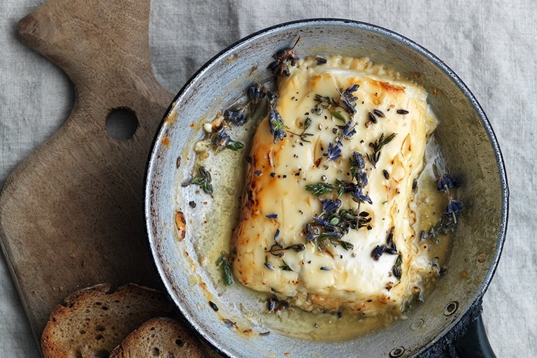
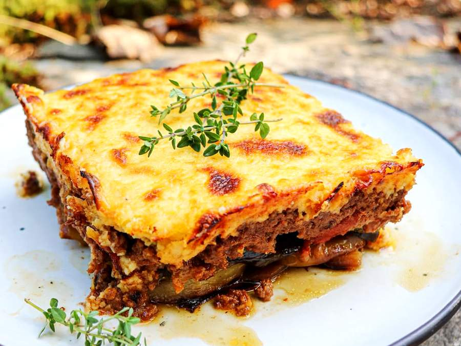
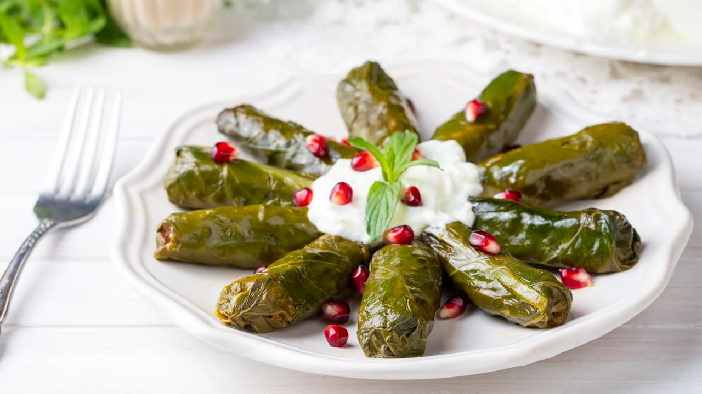

Conheça a Culinária Grega
A culinária grega é uma celebração de sabores frescos e ingredientes locais, refletindo a rica história e cultura do país. Os pratos típicos, que vão desde opções reconfortantes em tavernas até delícias de festivais, combinam ervas aromáticas, azeite de oliva e produtos frescos. Cada prato conta uma história, revelando tradições passadas e a diversidade regional, tornando a gastronomia grega uma parte essencial da experiência cultural.
Moussaka
Souvlaki
Tzatziki
Dolmadakia

Feta com Mel
Spanakopita
Receita do Moussaka

Ingredientes (4 porções)
- 500 g de berinjelas fatiadas finas, em sentido longitudinal
- Sal a gosto
- 1/2 xícara de chá de azeite de oliva
- 2 cebolas médias picadas
- 500 g de carne moída (carne magra)
- 3 tomates sem pelo e sem sementes
- 1 xícara de café de cachaça
- 1 colher de chá de pimenta do reino
- 1 colher de chá de canela em pó
- 1 colher de café de noz-moscada
- 1 colher de sopa de farinha de rosca
- 2 colheres de sopa de manteiga ou margarina
- 2 colheres de sopa (rasas) de farinha de trigo
- 500 ml de leite
- 1 colher de chá de noz-moscada
- 150 g de queijo parmesão ralado
Modo de Preparo
- Coloque as fatias de berinjela em água e sal e deixe por 20 minutos.
- Escorra bem até tirar todo o excesso de água.
- Grelhe as fatias de berinjela em frigideira untada com margarina e reserve.
- Coloque o azeite na panela e refogue as cebolas, junte a carne moída e mexa até dourar. Acrescente os tomates, a cachaça e todos os temperos.
- Deixe em fogo baixo por 30 minutos até que seque quase todo o líquido. Ficará um molho espesso.
- Adicione a farinha de rosca, retire do fogo, misture bem e reserve.
- Bata no liquidificador todos os ingredientes do molho branco - exceto o queijo parmesão - coloque o líquido em uma panela e leve ao fogo, mexendo sempre até engrossar. Reserve.
- Montagem: Em um refratário untado com manteiga, faça uma camada de berinjela, depois uma camada da carne.
- Intercale as camadas até finalizar com uma camada de berinjela.
- Cubra com o molho branco, espalhe o queijo ralado e leve ao forno pré-aquecido a 200° por aproximadamente 40 minutos.
Receita do Souvlaki
Ingredientes
- 1 libra de carne de cordeiro, cortada em cubos
- 1 suco de limão
- 2 dentes de alho picados
- 1 colher de sopa de endro
- 1 colher de sopa de canela em pó
- 1/4 colher de sopa de pimenta preta
- 1 colher de sopa de sal
- 1 colher de sopa de tomilho
- 2 colheres de sopa de Ac'cent ou AJI-NO-MOTO® (MSG)
- 2 colheres de sopa de azeite
- 1/2 libra de tomate cereja
- 1/2 libra de abobrinha, cortada em cubos
Modo de Preparo
- Combine a carne de cordeiro com suco de limão, alho, endro, canela em pó, pimenta do reino, sal e tomilho.
- Cubra e deixe marinar durante a noite.
- Pique a carne de cordeiro com tomate cereja e abobrinha.
- Em uma panela, grelhe os espetos de cordeiro com azeite.
- Pincele azeite nos espetos com um pincel de tomilho.
- Servir!
Receita do Tzatziki

Ingredientes
- 2 xícaras de iogurte grego
- 1 pepino médio, ralado
- 2 dentes de alho, picados
- 1 colher de sopa de azeite de oliva
- 1 colher de sopa de vinagre de vinho branco
- Sal a gosto
- Hortelã fresca picada a gosto
Modo de Preparo
- Em uma tigela, misture o iogurte, pepino, alho, azeite e vinagre.
- Tempere com sal e hortelã.
- Deixe na geladeira por pelo menos 1 hora antes de servir.
Receita do Dolmadakia

Ingredientes
- 1 xícara de arroz
- 1/2 xícara de carne moída
- 1 cebola picada
- 2 colheres de sopa de azeite
- 1 colher de sopa de endro
- Sal e pimenta a gosto
- Folhas de uva, lavadas e secas
- Suco de 1 limão
Modo de Preparo
- Refogue a cebola no azeite até ficar macia.
- Adicione a carne e cozinhe até dourar.
- Misture o arroz, endro, sal e pimenta.
- Coloque uma colher da mistura nas folhas de uva e enrole como charutinhos.
- Coloque os dolmadakia em uma panela, adicione o suco de limão e água até cobrir.
- Cozinhe em fogo baixo por 30-40 minutos.
Receita de Feta com Mel
Ingredientes
- 200 g de queijo feta
- 4 colheres de sopa de mel
- Nozes picadas a gosto
- Hortelã fresca para decorar
Modo de Preparo
- Coloque o queijo feta em um prato.
- Regue com mel e polvilhe as nozes por cima.
- Decore com hortelã e sirva como entrada.
Receita de Spanakopita

Ingredientes
- 1 pacote de massa filo
- 400 g de espinafre picado
- 200 g de queijo feta esfarelado
- 1 cebola picada
- 2 ovos batidos
- 1/4 xícara de azeite de oliva
- Sal e pimenta a gosto
Modo de Preparo
- Refogue a cebola até ficar macia.
- Adicione o espinafre e cozinhe até murchar.
- Misture o queijo feta, ovos, sal e pimenta.
- Unte uma forma e coloque camadas de massa filo, pincelando com azeite.
- Adicione o recheio e cubra com mais camadas de massa filo.
- Asse em forno pré-aquecido a 180°C por 30-40 minutos ou até dourar.